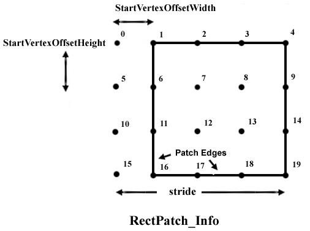

description: Describes a rectangular high-order patch. ms.assetid: 5f195009-d047-4dc0-a386-e1a434914e34 title: D3DRECTPATCH_INFO structure (D3D9Types.h) ms.topic: reference ms.date: 05/31/2018 topic_type:
Describes a rectangular high-order patch.
typedef struct D3DRECTPATCH_INFO {
UINT Â Â Â Â Â Â Â Â Â StartVertexOffsetWidth;
UINT Â Â Â Â Â Â Â Â Â StartVertexOffsetHeight;
UINT Â Â Â Â Â Â Â Â Â Width;
UINT Â Â Â Â Â Â Â Â Â Height;
UINT Â Â Â Â Â Â Â Â Â Stride;
D3DBASISTYPE Â Basis;
D3DDEGREETYPE Degree;
} D3DRECTPATCH_INFO, *LPD3DRECTPATCH_INFO;
StartVertexOffsetWidth
Type: UINT
Starting vertex offset width, in number of vertices.
StartVertexOffsetHeight
Type: UINT
Starting vertex offset height, in number of vertices.
Width
Type: UINT
Width of each vertex, in number of vertices.
Height
Type: UINT
Height of each vertex, in number of vertices.
Stride
Type: UINT
Width of the imaginary two-dimensional vertex array, which occupies the same space as the vertex buffer. For an example, see the diagram below.
Basis
Type: D3DBASISTYPE
Member of the D3DBASISTYPE enumerated type, defining the basis type for the rectangular high-order patch.
| Value | Order supported | Width and height |
|---|---|---|
| D3DBASIS_BEZIER | Linear, cubic, and quintic | Width = height = (DWORD)order + 1 |
| D3DBASIS_BSPLINE | Linear, cubic, and quintic | Width = height > (DWORD)order |
| D3DBASIS_INTERPOLATE | Cubic | Width = height > (DWORD)order |
Â
Degree
Type: D3DDEGREETYPE
Member of the D3DDEGREETYPE enumerated type, defining the degree for the rectangular patch.
The following diagram identifies the parameters that specify a rectangle patch.

Each of the vertices in the vertex buffer is shown as a black dot. In this case, the vertex buffer has 20 vertices in it, 16 of which are in the rectangle patch. The stride is the number of vertices in the width of the vertex buffer, in this case five. The x offset to the first vertex is called the StartIndexVertexWidth and is in this case 1. The y offset to the first patch vertex is called the StartIndexVertexHeight and is in this case 0.
To render a stream of individual rectangular patches (non-mosaic), you should interpret your geometry as a long narrow (1 x N) rectangular patch. The D3DRECTPATCH_INFO structure for such a strip (cubic Bézier) would be set up in the following manner.
D3DRECTPATCH_INFO RectInfo;
RectInfo.Width = 4;
RectInfo.Height = 4;
RectInfo.Stride = 4;
RectInfo.Basis = D3DBASIS_BEZIER;
RectInfo.Order = D3DORDER_CUBIC;
RectInfo.StartVertexOffsetWidth = 0;
RectInfo.StartVertexOffsetHeight = 4*i; // The variable i is the index of the
// patch you want to render.
| Requirement | Value |
|---|---|
| Header | D3D9Types.h |
Â
Â